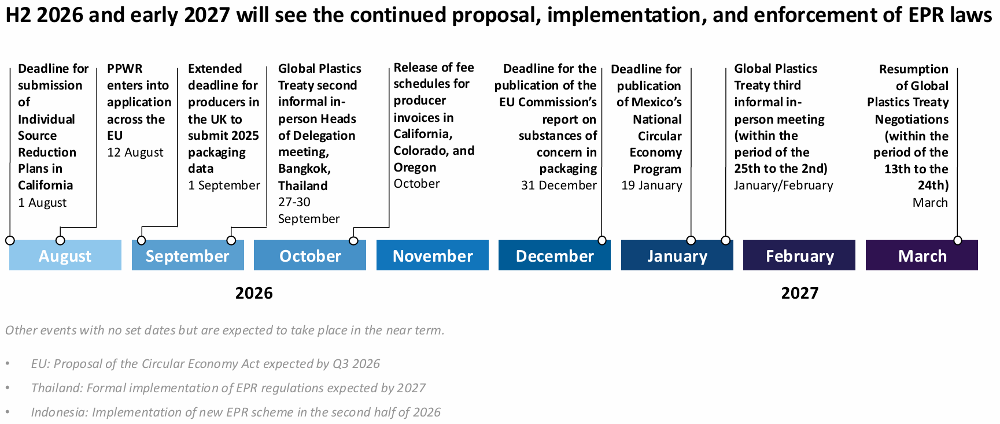

|
 |
|||
|
||||
|
||
The popularity of EPR regulation is driving widespread adoption. Governments increasingly view producer-funded EPR programs as the most practical mechanism to advance circular economy goals, as they shift financing burdens onto companies and are popular among voters. A 2024 survey by Ipsos found that 77%, 72%, 71%, and 65% of people in Latin America, Asia Pacific, Europe, and North America, respectively, believed that making “plastic producers accountable for reducing waste and plastic pollution from their products” was “very important” or “important.” Senior policymakers, including ministers in the UK, Indonesia, and South Africa, have also tied EPR laws to broader health and economic goals, such as supporting the domestic recycling industry, lowering vulnerability to external shocks, and formalizing informal workers. Fragmentation is the defining business challenge. Across jurisdictions, the direction of travel is remarkably consistent. A growing number of governments are pushing packaging policy beyond waste management and into producer accountability, recycled-content requirements, and chemicals of concern, even as the Global Plastics Treaty has stalled. The EU is implementing its Packaging and Packaging Waste Regulation (PPWR); US states are rolling out EPR frameworks; Canadian provinces continue to refine and expand their EPR laws; Asian markets are catching up. Although these laws are aligned in objective, they vary in their targets, covered materials, reporting requirements, fee structures, compliance timelines, and enforcement mechanisms. This creates significant operational complexity for businesses, especially multinational ones. This environment rewards scale, data capabilities, and supply-chain visibility. The most exposed companies are not necessarily those with the largest plastic footprints, but those operating across multiple jurisdictions with fragmented packaging portfolios and limited visibility into packaging data, materials, and compliance obligations. Conversely, companies with global packaging platforms, strong packaging governance, and centralized reporting systems will generally be better positioned than firms relying on market-by-market compliance. The cost of redesigning packaging portfolios will rise, but so will the cost of maintaining multiple packaging specifications across regions. The Global Plastics Treaty is unlikely to reduce the regulatory burdens on companies. Talks at the next round of substantive negotiations (INC-5.4) are unlikely to produce a breakthrough. First, it is perhaps the most geopolitically challenging time to secure a binding and ambitious multilateral deal given the G-Zero reality, where no nation has the power or willingness to lead. Second, fundamental and persistent divisions remain between countries over how far governments should intervene upstream in production and material choices. The election of a new chair and several intersessional meetings this year have not bridged these disagreements. Debates over operational details of EU packaging rules reflect compliance challenges. Consumer brands have raised concerns about unresolved technical questions in the EU PPWR involving per- and polyfluoroalkyl substances (PFAS) methodologies, recyclability criteria, reuse obligations, and restrictions on certain plastic packaging formats. At the same time, recyclers, packaging suppliers, and circular-economy advocates are urging policymakers to maintain implementation timelines, arguing that investment decisions depend on regulatory certainty. The most likely outcome is continued implementation of the PPWR alongside ongoing disputes over guidance, definitions, technical standards, and compliance methods. Companies operating in jurisdictions with ambitious plastics regulations must dissect how individual provisions will be implemented, measured, and enforced. Midterm elections are unlikely to have a decisive or immediate effect on EPR in the US. Legislative gridlock is the basecase for the 2027-2028 Congress, including for plastic circularity policies, which have struggled to gain traction since the 117th Congress. Litigation by states and companies will remain the main watchpoint for EPR implementation, a dynamic unlikely to change given the lack of competitive attorney general races in claimant states. Even if Democrats gain ground in sub-national elections, EPR policy is unlikely to tighten quickly, as state-level EPR legislation typically takes years to pass and implement. Litigation against US EPR laws will probably delay rather than derail implementation. The most significant cases are lawsuits filed by the National Association of Wholesaler-Distributors (NAW) and by a 17-state coalition of Republican attorneys general against Oregon and California, respectively. Both lawsuits allege that Oregon’s and California’s EPR laws, Senate Bill 582 and Senate Bill 54, unlawfully restrict interstate commerce and improperly delegate regulatory authority to a private organization, the Circular Action Alliance. The likely outcome, with a judge expected to rule on the NAW case by the end of August, is modification of the laws. This includes a narrower scope, stronger safeguards for affected companies, enhanced transparency, and less authority for private producer responsibility organizations. Although these changes would fall short of a rollback, they could slow down implementation or encourage similar litigation in other states considering EPR programs.  |